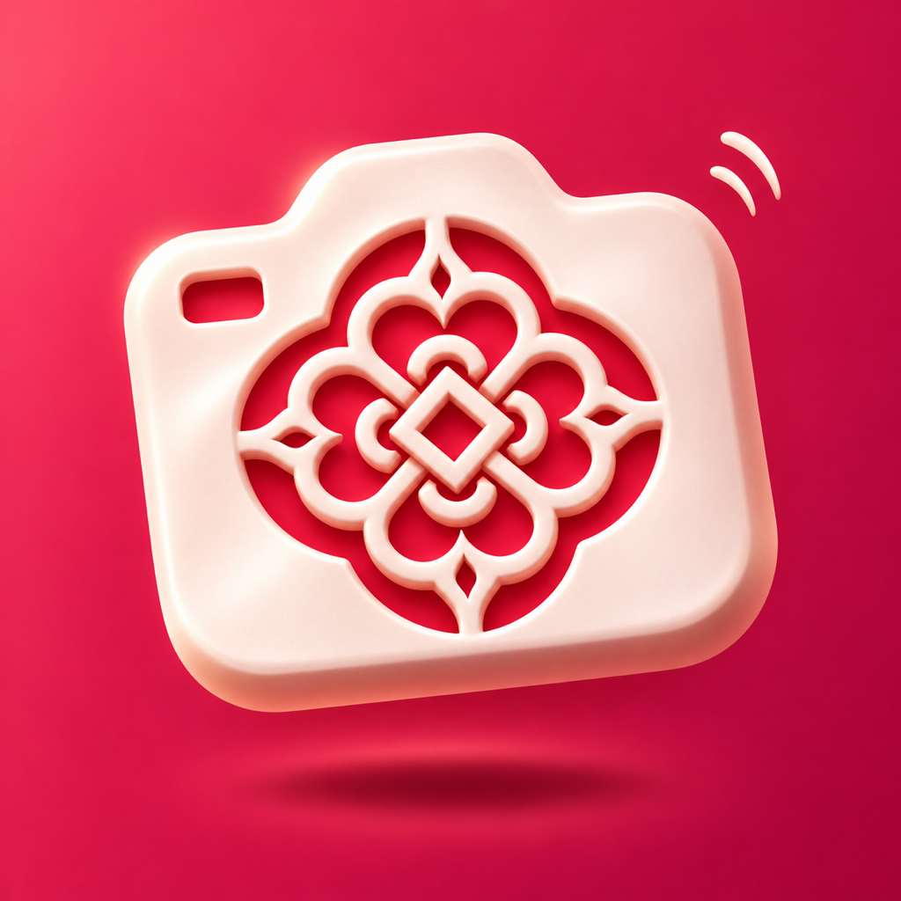
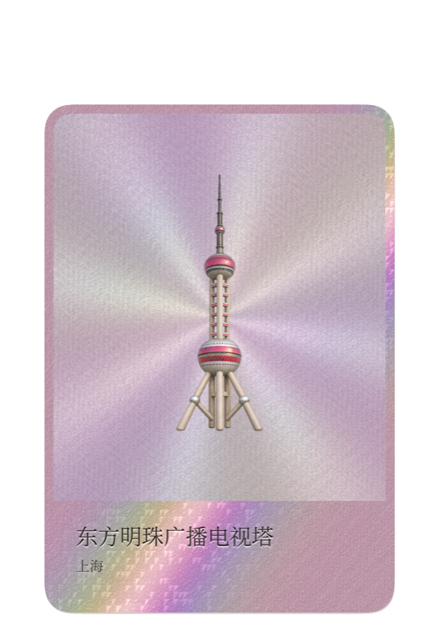
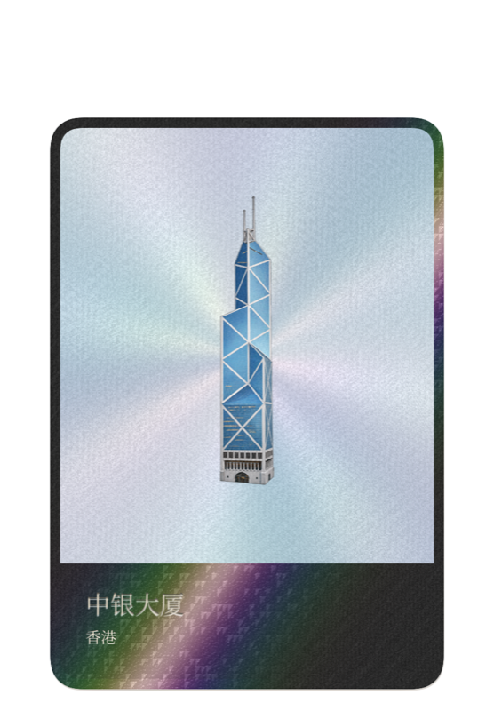
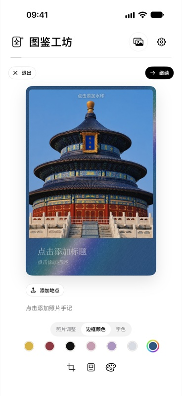
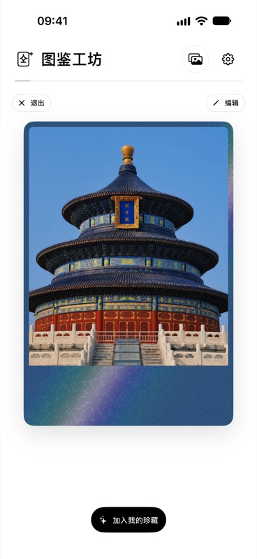
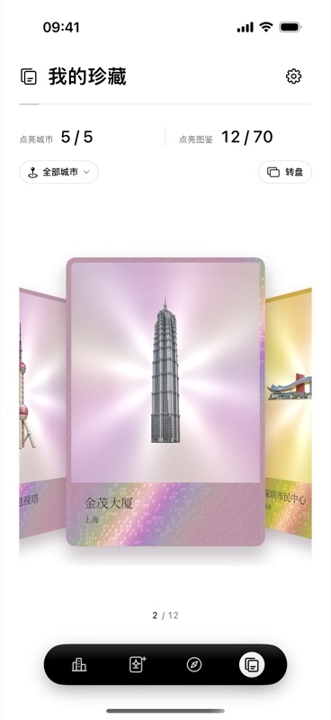
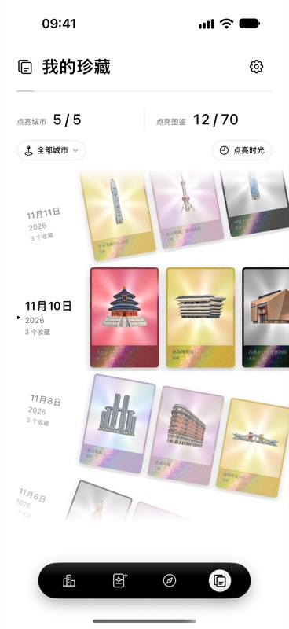

拍照点亮，解锁剪纸
对准建筑轮廓拍照，识别成功后，剪纸图鉴亮起，地标闪卡也会加入珍藏。你也可以从相册选图，或到地标附近用定位点亮。

LumiFolio对准地标轮廓拍一张照片，识别成功后就能点亮图鉴，把地标闪卡收进珍藏。
当前支持：北京 · 上海 · 深圳 · 香港 · 重庆


从天坛祈年殿到现代城市天际线，LumiFolio 用中国剪纸的视觉语言，串起建筑、照片与城市记忆。无论你喜欢建筑、城市摄影，还是卡牌收藏，都可以按自己的节奏探索。
对准建筑轮廓拍照，识别成功后，剪纸图鉴亮起，地标闪卡也会加入珍藏。你也可以从相册选图，或到地标附近用定位点亮。
在图鉴工坊选一张喜欢的照片，定制边框、文字和水印，把自己的闪卡加入珍藏。


在「我的珍藏」里，用转盘翻看收藏的闪卡，或切换到「点亮时光」，按日期回看旅途中点亮的地标。

